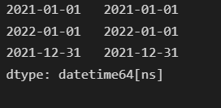
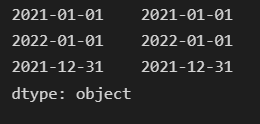
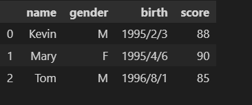
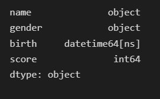
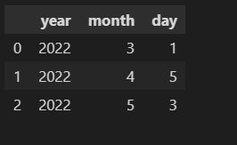
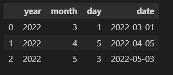
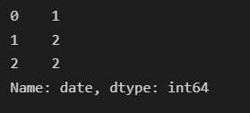

Pandas >> How to process Date and Time type data in Pandas using Timestamp
Table of Contents
Python’s datetime object is replaced by the Timestamp object in Pandas.
In this article, we will talk about how to process date and time type data using Timestamp type data and convert between Timestamp and Python’s type or string in Pandas.

Create a single Timestamp object
Python’s datetime object is replaced by the Timestamp object in Pandas. The Timestamp adds some features to the datetime object. Its constructor is the same as datetime.
year, month, and day are required.
import pandas as pd
pd.Timestamp(2022,1,1)
# OR
pd.Timestamp(year=2022, month=1, day=1)
Timestamp('2022-01-01 00:00:00')
Timestamp’s constructor also accepts Python’s datetime objects in the constructor.
import datetime as dt
pd.Timestamp(dt.datetime(2021,12,31))
Timestamp('2021-12-31 00:00:00')
Many string formats are accepted by the constructor of the Timestamp.
pd.Timestamp("2022/8/31")
# OR
pd.Timestamp("2022-8-31")
# OR
pd.Timestamp("8/31/2022")
# OR
pd.Timestamp("2022-08-31 00:00")
# OR
pd.Timestamp("2022-08-31 00:00:00 AM")
Timestamp('2022-08-31 00:00:00')
A float can also be converted to Timestamp. unit option is required.
pd.Timestamp(1560000000.5, unit='s')
Timestamp('2019-06-08 13:20:00.500000')
The time zone can be specified in the above constructors.
pd.Timestamp("2022/8/31", tz="US/Pacific")
Timestamp('2022-08-31 00:00:00-0700', tz='US/Pacific')
Convert Timestamp to Python’s type
We can use the to_pydatetime() method of the Timestamp to convert the Timestamp type to Python’s datetime type.
pd.Timestamp("2022-08-31 00:00").to_pydatetime()
datetime.datetime(2022, 8, 31, 0, 0)
We can also convert the Timestamp type to Python’s date and time type using the date() and time() method.
pd.Timestamp("2022-08-31 00:00").date()
datetime.date(2022, 8, 31)
pd.Timestamp("2022-08-31 12:34").time()
datetime.time(12, 34)
Multiple Timestamps (DatetimeIndex, Series)
Multiple Timestamps can be stored in DatetimeIndex or Series.
DatetimeIndex is used in time series data. When date and time data are stored in DatetimeIndex, time-related operations like sorting are possible.
We can create a DatetimeIndex object as follows.
Create a DatetimeIndex directly
We need to prepare a list of date-like strings, Python’s date object, and Timestamp object of Pandas. And use DatetimeIndex’s constructor to create a DatetimeIndex object.
date_list = ["12/31/2022", dt.date(2022,11,1), pd.Timestamp(2021,10,10)]
pd.DatetimeIndex(date_list)
DatetimeIndex(['2022-12-31', '2022-11-01', '2021-10-10'], dtype='datetime64[ns]', freq=None)
Store the Timestamps as the Index of Series or DataFrame
dates = [
pd.Timestamp("2022-4-1"),
pd.Timestamp("2022-4-2"),
pd.Timestamp("2022-4-3"),
]
s_temp = pd.Series(data={"temperature":[15,16,18]}, index=dates)
s_temp.index
DatetimeIndex(['2022-04-01', '2022-04-02', '2022-04-03'], dtype='datetime64[ns]', freq=None)
Convert a string list to DatetimeIndex
If we have a list of date strings and use the Pandas.to_datetime() to convert it. We will get a DatetimeIndex object.
list_dt = pd.to_datetime(["2021-1-1", "2022/1/1", "12/31/2021"])
list_dt
DatetimeIndex(['2021-01-01', '2022-01-01', '2021-12-31'], dtype='datetime64[ns]', freq=None)
Convert a Series of strings to a Series of Timestamp
If we give the Pandas.to_datetime() method a Pandas.Series object with all values is date-like strings, a Pandas.Series object is returned.
Maybe this is the common case in actual work where we want to convert date-like string type column to Timestamp type columns.
series_dt = pd.to_datetime(pd.Series(["2021-1-1", "2022/1/1", "12/31/2021"]))
type(series_dt)
pandas.core.series.Series
Convert DatetimeIndex to a Series of Timestamp
We can use the to_series() method of the DatetimeIndex to convert the DatetimeIndex object to a Pandas.Series object with its value type is Timestamp.
pd.to_datetime(["2021-1-1", "2022/1/1", "12/31/2021"]).to_series()

Convert DatetimeIndex to a Series of String
We can combinate the strftime() method of DatetimeIndex and the to_series() method to convert the DatetimeIndex object to a Pandas.Series object of string type.
pd.to_datetime(["2021-1-1", "2022/1/1", "12/31/2021"]).strftime("%Y-%m-%d").to_series()

Convert a string column to a date column
Suppose we have a DataFrame like the following.
df = pd.DataFrame(data={"name": ["Kevin", "Mary", "Tom"], "gender":["M", "F", "M"], "birth": ["1995/2/3", "1995/4/6", "1996/8/1"], "score": [88,90,85]})
df

The type of the birth column’s values is string.
type(df["birth"].iloc[0])
str
If you want to learn more about how to create a DataFrame in Pandas, you can reference the article below.
Pandas » How to Create DataFrame in Pandas
https://thats-it-code.com/pandas/pandas__how-to-create-a-dataframe/
If you want to learn more about how to locate data in Pandas, you can reference the article below.
Pandas » How to Select and Modify Data
https://thats-it-code.com/pandas/pandas__how-to-select-and-modify-data/
We can use the above way to convert the birth column to datetime type.
df["birth"] = pd.to_datetime(df["birth"])
print(df["birth"].iloc[0])
print(type(df["birth"].iloc[0]))
1995-02-03 00:00:00
<class 'pandas._libs.tslibs.timestamps.Timestamp'>
df.dtypes

Convert the column to Timestamp type when reading data
We can also specify which columns to be converted when reading the data using parse_dates options.
Suppose we have the data below in the data folder.
Download the CSV file below
df3 = pd.read_csv("data/student_scores.csv", header=0, parse_dates=["birth"])
print(df3["birth"].iloc[0])
print(type(df3["birth"].iloc[0]))
2000-01-01 00:00:00
<class 'pandas._libs.tslibs.timestamps.Timestamp'>
Convert year, month, and day columns to a date column
If there are year, month, and day columns in a DataFrame, we can use the to_datetime() method of Pandas to concatenate the three columns to a date type column.
df2 = pd.DataFrame(data = [[2022,3,1], [2022,4,5],[2022,5,3]], columns=["year", "month", "day"])
df2

df2["date"] = pd.to_datetime(df2)
df2

Execute date-like operations using pandas.Series.dt
We can use all kinds of properties in pandas.Series.dt to do some date-like operations.
For example, if we want to get the quarter information of each date, we can use the quarter property of pandas.Series.dt.
df2["date"].dt.quarter

The whole list of Datetime properties is as follows.
Datetime properties
https://pandas.pydata.org/docs/reference/series.html#datetime-properties
Conclusion
In Pandas, Python’s datetime object is replaced by the Timestamp object.
- We can create a single Timestamp using year, month, and day, or strings with different format, datetime objects, and so on.
- We can convert a Timestamp object to Python’s datetime, date, or time object.
- We can store multiple Timestamp values in a DatetimeIndex or a Pandas Series.
- We can convert among DatetimeIndex, Series of Timestamp, and Series of string.
- We can also convert some columns to date type when reading the data.
- If the three columns(year, month, and day) exist in a DataFrame, we can concatenate them to one date type column.
- We can utilize the properties in pandas.Series.dt to extract some useful information or do some convenient operations.